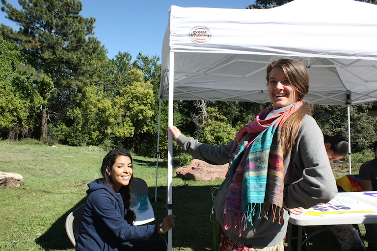
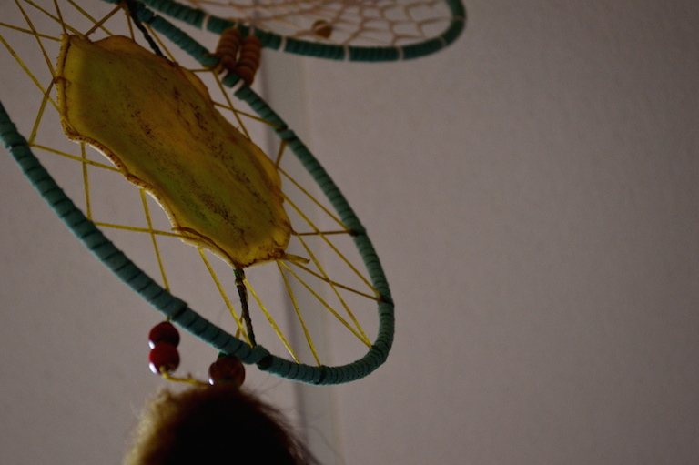
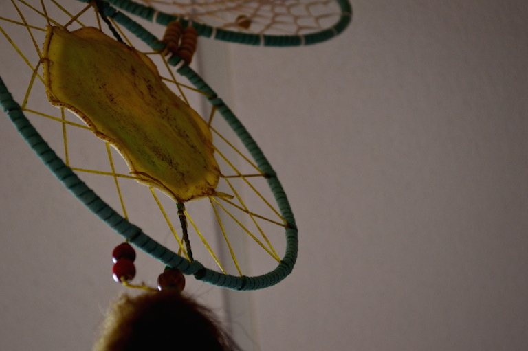
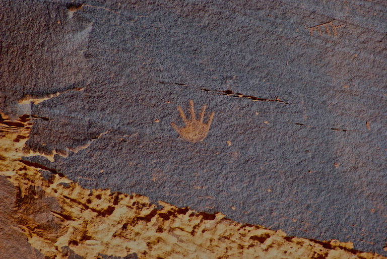
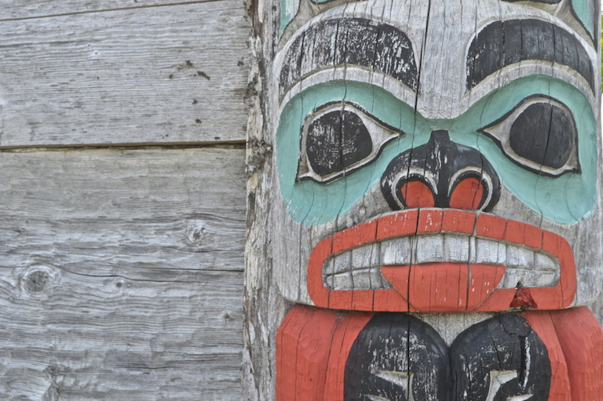
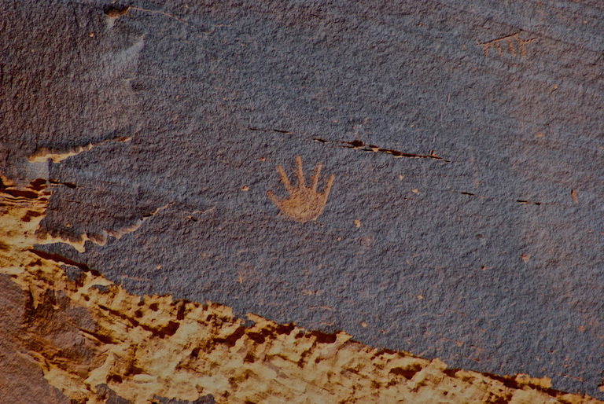
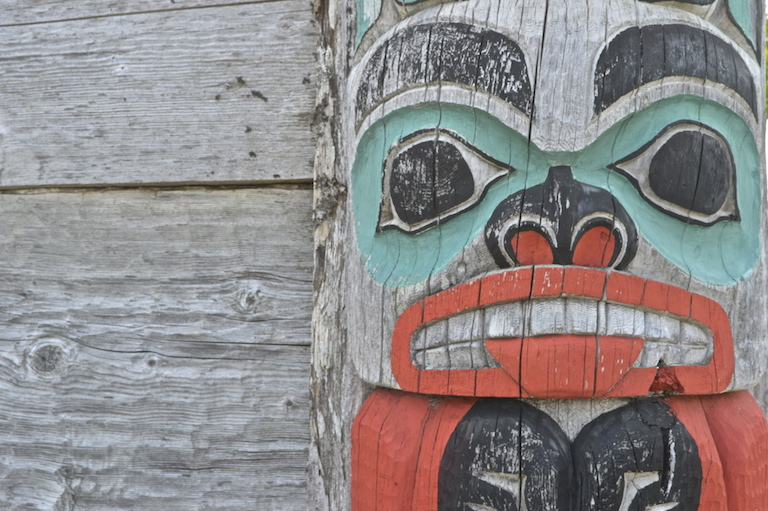
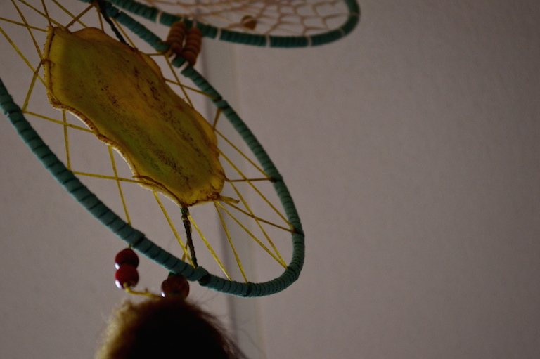
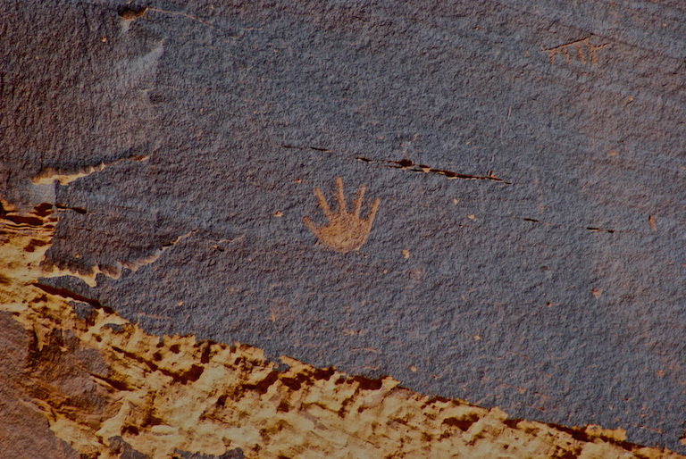
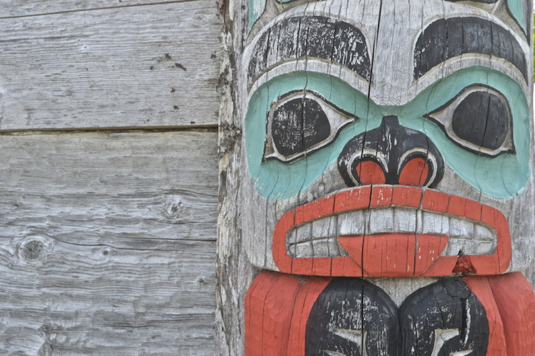

The Oyate Native American Student Organization serves as a support center for Native American students (graduate and undergraduate), and offers a communal atmosphere where students can come together to share their unique cultures, backgrounds, and traditions. It offers academic support, and is the central place for Native American students to network with one another, and other student groups both locally and nationally.

 

 





